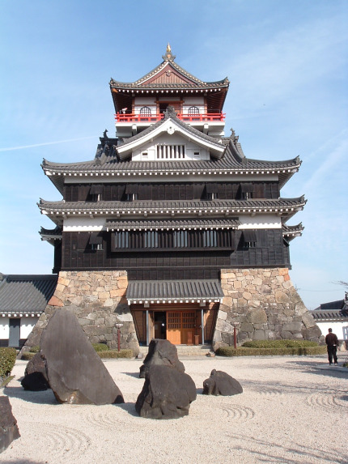

Oda Nobunaga (織田 信長) Oda Nobunaga (23 de junho de 1534 – 21 de junho de 1582) foi um grande daimyo do período Sengokuda história japonesa. Filho de Oda Nobuhide, um guerreiro de menor importância e poucas terras na província de Owari. Nobunaga viveu uma vida de contínuas conquistas militares até conquistar quase todo o Japão, quando foi assassinado em 1582. Seus sucessores são Toyotomi Hideyoshi e Tokugawa Ieyasu que, assim como Oda, foram figuras de extrema importância na história japonesa. Nobunaga é lembrado no Japão como um dos personagens mais brutais do período Sengoku.
Primeiros anos
Nobunaga nasceu em 23 de Junho de 1534, no castelo de Nagoya e em sua infância era chamado de Kippōshi (吉法師). Sua mãe era Gozen Tsuchida e seu pai era Nobuhide, que dois anos mais tarde se tornou o dono do Castelo Nagoya. Durante sua infância e começo da adolescência, Nobunaga era conhecido por seu comportamento bizarro e recebeu o apelido de Owari no Ooutsuke (尾張の大うつけ Tolo de Owari). Nobunaga também era conhecido por brincar com outros jovens da região, sem qualquer consideração a sua própria posição social. Com a introdução de armas de fogo no Japão, entretanto, Nobunaga ficou encantado com as Tanegashimas.
Em 1548, Nobunaga casou-se com Nōhime, filha de Saitō Dōsan, por estratégia política; contudo, ela não lhe gerou nenhum filho sendo considerada estéril. Foram as suas concubinas Kitsuno e a Senhora Saka que geraram seus filhos. Foi Kitsuno quem deu à luz o filho mais velho de Nobunaga, Nobutada. O filho de Nobutada, Hidenobu, se tornou o soberano do clã Oda após as mortes de Nobunaga e Nobutada.
A Unificação de Owari
Em 1551, Oda Nobuhide (pai de Nobunaga) morreu inesperadamente. No funeral, consideraram que Nobunaga agiu ultrajosamente ao jogar incenso cerimonial no altar. Isso convenceu a muitos da falta de disciplina de Nobunaga e a favorecerem seu irmão Nobuyuki. E o querido mentor de Nobunaga, Hirate Masahide não aguentou tamanha vergonha e cometeu seppuku. Isso abalou Nobunaga profundamente, tanto que mais tarde Nobunaga construiu um templo em sua homenagem.
Embora Nobunaga fosse o legítimo sucessor de Nobuhide, o clã Oda estava dividido em várias facções e o clã estava tecnicamente sob o controle do Shugo de Owari, Shiba Yoshimune. Oda Nobutomo, irmão do falecido Nobuhide e deputado para o Shugo, usou o fraco Yoshimune como seu fantoche para se estabelecer como o novo comandante de Owari no lugar de Nobunaga. Mais tarde, Nobutomo assassinou Yoshimune por estar tramando contra ele.

Castelo de Kiyosu, onde Oda Nobunaga estabeleceu residência por dez anos.
Nobunaga persuadiu Oda Nobumitsu, um irmão mais novo do falecido Nobuhide, a se juntar a ele e, com a ajuda de Nobumitsu, Nobunaga derrotou Nobutomo no castelo de Kiyosu com Nobutomo se matando no processo. O filho de Yoshimune, Shiba Yoshikane, se tornou o legítimo Shugo e, tomando vantagem disso, Nobunaga forjou uma aliança com o clã Imagawa da província de Suruga e o clã Kira da província de Mikawa — como os dois clãs tinham o mesmo Shugo, não havia motivos para recusar. A aliança permitiu que os Imagawa parassem de atacar as fronteiras de Owari.
Embora ainda houvesse muitas forças ao lado de Nobuyuki e opostas a Nobunaga, Nobunaga mandou um exército para a Província de Mino para ajudar Saito Dosan contra seu filho Saito Yoshitatsu que se voltou contra ele. A campanha falhou, à medida que Saito Dosan é assassinado, e Saito Yoshitatsu se torna o novo comandante de Mino em 1556.
Meses depois, Nobuyuki com o apoio de Hayashi Hidesada, se rebelou contra Nobunaga. Os conspiradores foram derrotados na Batalha de Ino, mas foram perdoados depois da intervenção de Tsuchida Gosen, a mãe de Nobunaga e Nobuyuki. No outro ano, Nobunaga foi informado por Shibata Katsuie que Nobuyuki estava planejando se rebelar contra ele outra vez. Nobunaga se fingiu de doente para se aproximar de Nobuyuki e o assassinou no castelo de Kiyosu.
Por volta de 1559, Nobunaga tinha eliminado toda sua oposição dentro do clã e em Owari. Nobunaga continuou a usar Shiba Yoshikane para fazer paz com outros Daimyo, até que Nobunaga descobriu que Yoshikane estava tramando contra ele e a favor do clã Shiba. Nobunaga o tirou de sua posição e desfez todas as alianças com o clã Shiba.
Luta contra a invasão de Owari
Em 1560, o clã Imagawa liderado por Imagawa Yoshimoto começou uma ambiciosa marcha em direção à capital Quioto. O clã Matsudaira (que se tornaria o clã Tokugawa) se juntou a essa marcha que tinha como primeiro alvo a província de Owari. Depois de perder duas fortalezas para os Imagawa em Owari, Nobunaga viu que teria de se defender do enorme exército Imagawa com sua pequena força, e foi o que ele fez com uma tremenda façanha militar na Batalha de Okehazama onde não só se livrou da ameaça chamada "Imagawa" e condenou o futuro do clã Imagawa.
Depois da batalha, o clã Matsudaira forjou uma aliança com o clã Oda, apesar de anos de hostilidades entre os dois clãs.
Campanha de unificação do Japão
Na Província de Mino Saito Yoshitatsu morre repentinamente de uma doença e quem assume o comando do clã Saito é seu filho Saito Tatsuoki. Tatsuoki era um comandante muito mais fraco que seu pai e suas ações estavam deixando muitos Daimyos em Mino (vassalos dos Saito) descontentes. Tomando vantagem da situação, Nobunaga começou uma campanha para conquistar Mino, que só progrediu por causa das alianças que Nobunaga fez com os descontentes daimyos locais que enfraqueceram o poder do clã Saito. Em 1567, depois de seis anos de campanha, Nobunaga captura o castelo de Inabayama (rebatizando-o com o nome de Gifu) e manda Tatsuoki para o exílio.
Conquistas de Nobunaga 1560-1568
Depois de conquistar Gifu, Nobunaga revela suas intenções de conquistar o Japão usando o sinete pessoal de Tenka Fubu (o mundo nas mãos). Casou sua Irmã Oichi com Azai Nagamasa, um daimyo da Parte Norte da Província de Ōmi. Isso mais tarde ajudaria a pavimentar o caminho em direção a Kyoto.
Em 1568, Ashikaga Yoshiaki foi para Gifu perguntar a Nobunaga se este poderia iniciar uma campanha para Kyoto. Yoshiaki era irmão do shogun assassinado Ashikaga Yoshiteru, e queria vingança contra os assassinos que já haviam colocado um shogun fantoche, Ashikaga Yoshihide. Nobunaga concordou em instalar Yoshiaki como o novo shogun e aproveitou a oportunidade para entrar na cobiçada cidade de Kyoto tendo, então, começado uma campanha com Kyoto como alvo. O clã Rokkaku, no entanto, era um obstáculo na parte sul da província de Ōmi. Liderados por Rokkaku Yoshikata, o clã se recusou a reconhecer Yoshiaki como shogun e estava pronto para ir à guerra. Em resposta, Nobunaga lançou um ataque rápido, colocando o clã Rokkaku fora de seus castelos.
Dentro de um curto período de tempo, Nobunaga tinha alcançado Kyoto, colocado o clã Miyoshi para fora da cidade e feito com que Ashikaga Yoshiaki se tornasse o décimo quinto shogun do xogunato Ashikaga. Nobunaga recusou o cargo de Kanrei (Vice-Shogun) e finalmente começou a restringir os poderes do shogun, deixando claro que tinha a intenção de usá-lo como uma fachada para justificar suas futuras conquistas. Yoshiaki, no entanto, não estava satisfeito em ser um fantoche e mantinha contato secretamente com vários daimyos, forjando uma aliança anti-Nobunaga.